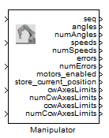

Manipulator

Robotino can be equipped with a manipulator (arm) and this manipulator can be controlled using the provided simulink block.
Contents
Block properties
Inputs
- ComId
- angles - Array containing the set-points in deg.
- numAngles - Number of elements in angles.
- speeds - Array containing the speed set-points in rpm.
- numSpeeds - Number of elements in speeds.
Outputs
- seq - The sequence number.
- angles - Array storing the current axes positions in degrees.
- numAngles - The number of elemets stored in angles. This is equal to the number of axes.
- speeds - Array storing the current axes speeds in rpm.
- numSpeeds - The number of elemets stored in speeds. This is equal to the number of axes.
- errors - Error code of axes.
- numErrors, The number of elemets stored in errors. This is equal to the number of axes.
- motors_enabled, Is 1 if the motors are enabled. Otherwise 0.
- store_current_position, Is 1 if the store position button is pressed. Otherwise 0.
- cwAxesLimits, Array storing the current axes limits in degrees.
- numCwAxesLimits, The number of elemets stored in cwAxesLimits. If axes limits had been received this is equal to the number of axes. Otherwise 0.
- ccwAxesLimits, Array storing the current axes limits in degrees.
- numCcwAxesLimits, The number of elemets stored in ccwAxesLimits. If axes limits had been received this is equal to the number of axes. Otherwise 0.